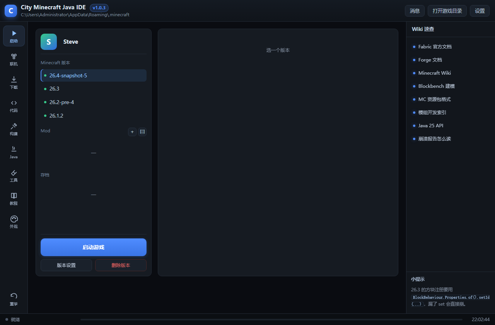
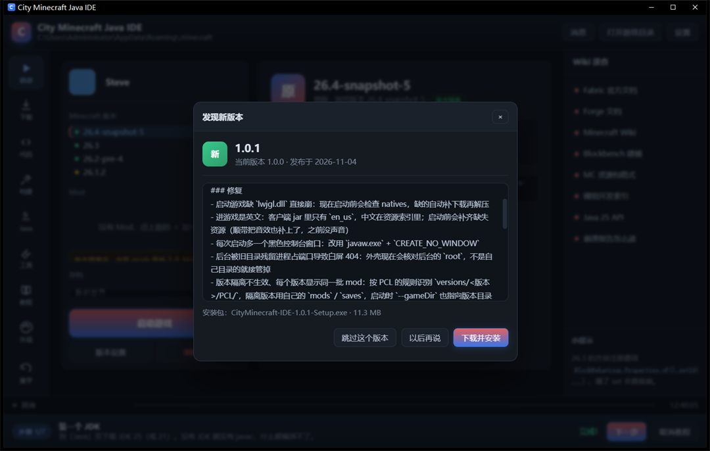
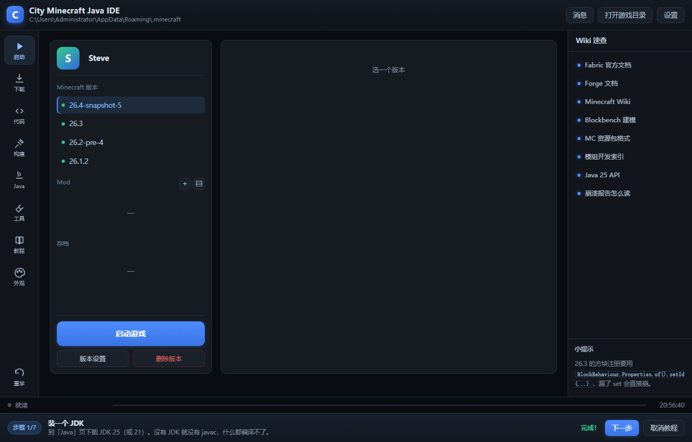
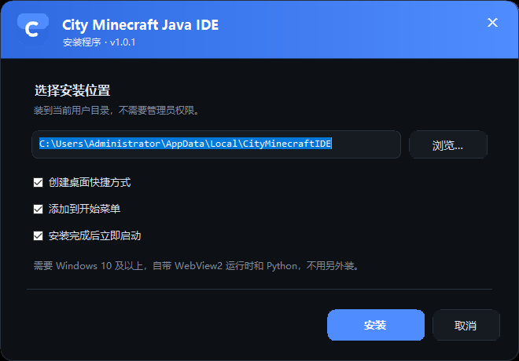

v1.0.2 已发布 · 自带运行时
写 Minecraft 模组，
写 Minecraft 模组，
不用开 IDEA
一个本地运行的桌面 IDE：内置 javac 编译器、版本下载器、启动器和崩溃诊断。 从写第一行代码到进游戏，全程在这一个窗口里。

一个窗口，从代码到游戏
不是套壳网页，是原生窗体 + 本地后端
原生窗口
WinForms + WebView2，没有地址栏、没有浏览器工具栏。标题栏、图标、任务栏都是它自己的。
内置编译器
直接调 JDK 的 javac / java，编译、打包 jar、运行一条龙，报错会翻译成中文并给出改法。
一键启动
原版、Fabric、Forge、NeoForge、Quilt、OptiFine 都能装。国内镜像优先，缺文件自动补齐。
启动后自动诊断
启动 15 秒后读日志，匹配常见崩溃模式（缺前置、Java 版本、显卡、内存），直接告诉你怎么办。
模组工坊
解析 jar、一键解包到工程目录、用 javap 反编译看字节码，排查别人的模组怎么写的。
可换外观
主题色、背景（纯色 / 渐变 / 图片）、暗化强度都能调，配置跟着走。
长这样
安装、启动、更新，三张实拍截图

新版本提示 · 启动时检查 GitHub release，有新版直接弹窗，能看更新日志、跳过这个版本或立即更新

版本设置 · 概览 / 设置 / 修改 / 导出，资源类的存档、截图、Mod、资源包、光影包各一栏

安装程序 · 装到用户目录，不弹 UAC，桌面和开始菜单快捷方式可选
三分钟上手
不需要装 JDK、不需要 Gradle、不需要配置环境变量
下载安装包
11 MB，双击运行。默认装到 %LOCALAPPDATA%，不弹管理员权限。
打开就写
「代码」页新建工程，模板帮你生成目录结构；写完点「编译」，报错中文提示。
点启动游戏
「下载」页装个版本，回「启动」页点大按钮。缺什么它会自己补，崩了它会告诉你原因。
用了什么
没有黑盒，全是能自己复查的东西
现在就能用
v1.0.2 · Windows 10 及以上 · 自带运行时，换台电脑也不用另装东西
下载 CityMinecraft-IDE-1.0.2-Setup.exe装完不会动你的 .minecraft —— 存档、模组、日志都留在原来的地方